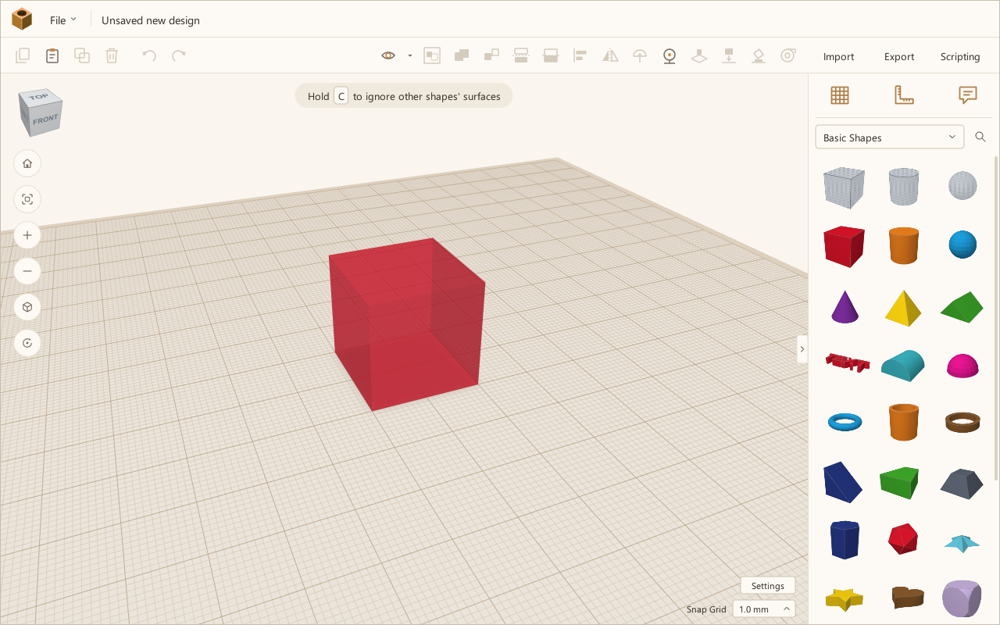
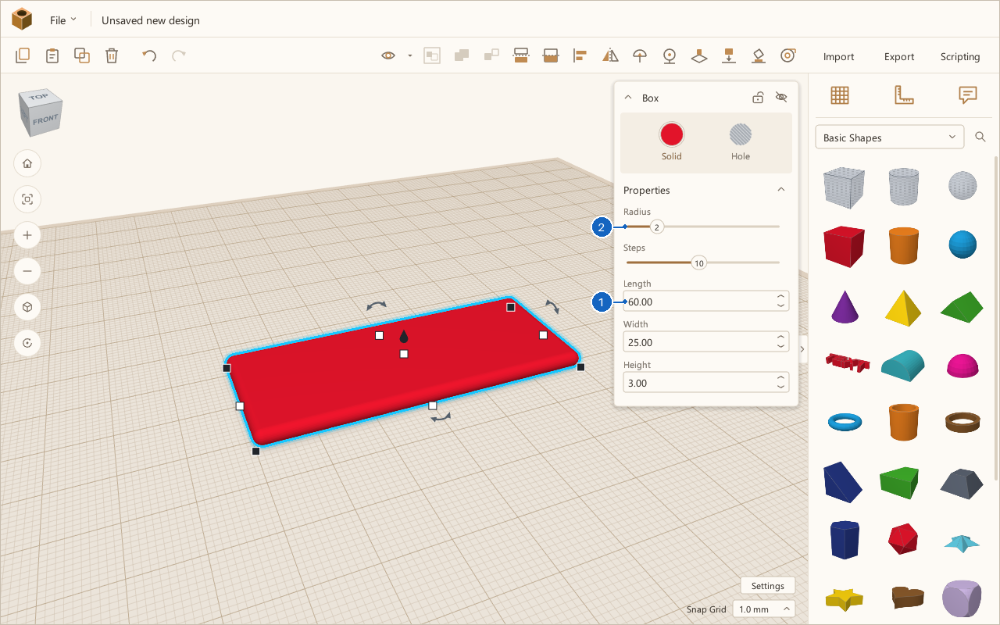
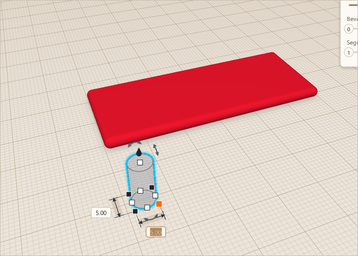
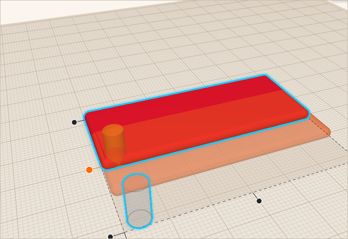
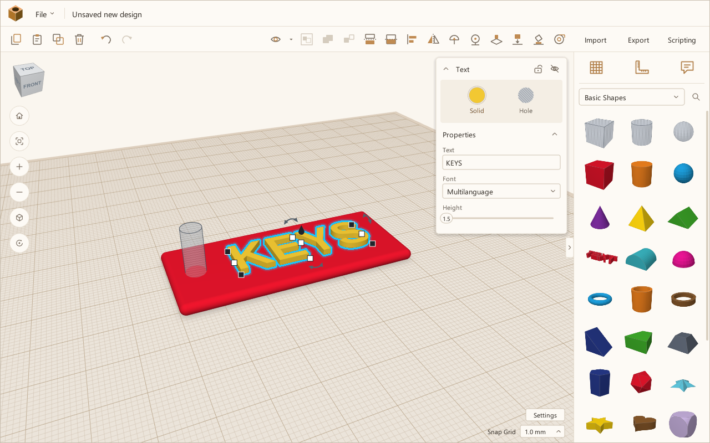
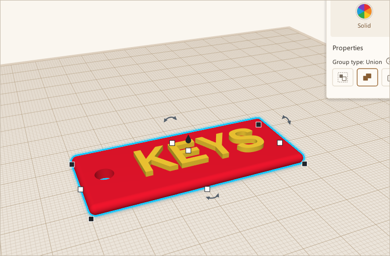
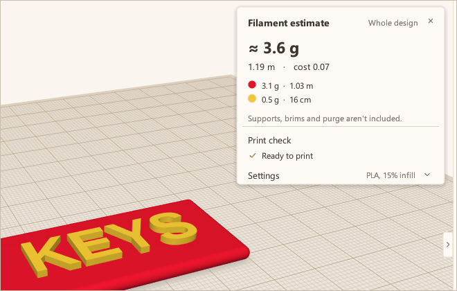

Chapter 1
Getting started
This chapter shows you round the window, then builds a small part, a key tag, from an empty build plate to a file ready for your slicer. It takes about ten minutes.
Installing
ScottiCAD has no installer. Download the release for Windows or Linux from the releases page, unpack it anywhere, and run scotticad.exe (Windows) or ./scotticad (Linux). The README has the details for each system.
Nothing you make leaves your computer. There is no account, and designs are ordinary files that you save where you like.
The window

- File menu and design name. New, Open, Save, Import, Export and the list of keyboard shortcuts. The name beside it is the design's file name.
- Editing buttons. Copy, Paste, Duplicate, Delete, Undo and Redo.
- Tools. Hide and show, group and ungroup, split, section view, align, mirror, place on surface, measure, construction plane, drop, lay flat and the filament estimate. Each has a tooltip with its name and key.
- Import, Export and Scripting.
- View buttons. The view cube, then Home, Fit, Zoom in, Zoom out, flat or perspective view, and the center of rotation. See Looking around.
- The build plate. The grid you build on. It stands for your printer's bed: 200 × 200 mm unless you change it in Settings. The small squares are 1 mm and the heavier lines are 10 mm apart.
- Properties. Appears when something is selected: its name, whether it is a solid or a hole, its colour and its own settings.
- The shape panel. Shapes to drag onto the plate, a list of libraries to choose from, and a search. The three buttons above it are the construction plane, the ruler and notes.
- Settings and Snap Grid. The snap grid is the step that shapes move and resize by.
Moving the view
You will want to look at the part from different sides as you build it.
| To | Do this |
|---|---|
| Turn the view (orbit) | Drag with the right mouse button |
| Slide the view (pan) | Drag with the middle button, or hold Shift and drag with the right button |
| Zoom | Turn the mouse wheel, or press + and - |
| See everything | Press F |
The next chapter covers the view in full.
A first part: a key tag
The tag is a flat plate with rounded corners, a hole for the key ring and raised lettering.
1. Add a box
Drag the red Box from the shape panel onto the build plate. A see-through copy follows the pointer until you let go.

The box is now selected: it has a blue outline and small square handles, and the Properties panel has opened beside it.
2. Make it the size of a tag
In Properties, click each number, type a new one and press Enter:
- Length 60, Width 25, Height 3 (callout 1)
- Drag the Radius slider to 2 to round the edges (callout 2). To set a slider exactly, click the number on it and type.

Sizes are in millimetres. To work in inches, see Settings.
3. Add a hole for the key ring
In ScottiCAD a hole is a shape that cuts away whatever it overlaps. The striped grey shapes at the top of the panel are holes.
- Drag the striped Cylinder onto an empty part of the plate, in front of the tag.
- Click one of its black corner handles. Its size appears as two numbers on the plate.
- Click each number, type 5 and press Enter.

Now put the hole in the tag. Drag it onto the left end of the tag, about 6 mm from the edge. Shapes move in 1 mm steps, so it is easy to place. The hole is taller than the tag is thick, so it goes right through.
4. Center the hole across the tag
- Click the tag, then hold Shift and click the hole, so both are selected.
- Press L for the align tool. Dots appear round the two shapes.
- Move the pointer over the middle dot on the short side. An orange preview shows where the shapes would go.
- Click the dot. The two shapes line up across their middles, so the hole is centered in the tag's width.
- Press Esc to put the tool away.

Both shapes moved a little to meet in the middle. To keep the tag where it is, click the tag itself before clicking the dot: a shape you click while aligning stays put and the others come to it.
5. Add the lettering
- Drag Text (the red word in the panel) onto the top of the tag. New shapes land on whatever is under the pointer, so it sits on the tag's top face.
- In Properties, click the Text box and type KEYS.
- Drag the Height slider down to 1.5. This is how far the letters stand up.
- Hold Shift and drag a black corner handle to shrink the word until it fits. Shift keeps its proportions.
- Drag the word into place.
- Click the coloured Solid disc in Properties and pick a colour.

6. Group the parts
Until now the tag, the hole and the lettering are three separate shapes. Grouping joins them into one part and cuts the hole.
- Press Ctrl+A to select everything.
- Press Ctrl+G.

A group takes one colour. To keep the lettering's own colour, click the Solid disc and turn Multicolor on.
Nothing is lost by grouping. Ctrl+Shift+G ungroups the tag back into its three shapes whenever you want to change one.
7. Check it
Click the spool button at the right end of the toolbar. The panel estimates the filament the part needs, and its Print check says whether the part is ready to print.

Getting ready to print explains what the check looks for.
8. Save and export
- Ctrl+S saves the design as a
.scotticadfile, which you can open and change later. - Export (top right) writes a file for your slicer. Choose STL, which every slicer reads, or 3MF to keep the colours.

Open the exported file in your slicer and print it.
What to read next
- Shapes shows everything in the shape panel.
- Moving, sizing and turning covers the handles and exact sizes.
- Holes and groups explains the idea the whole program is built on.